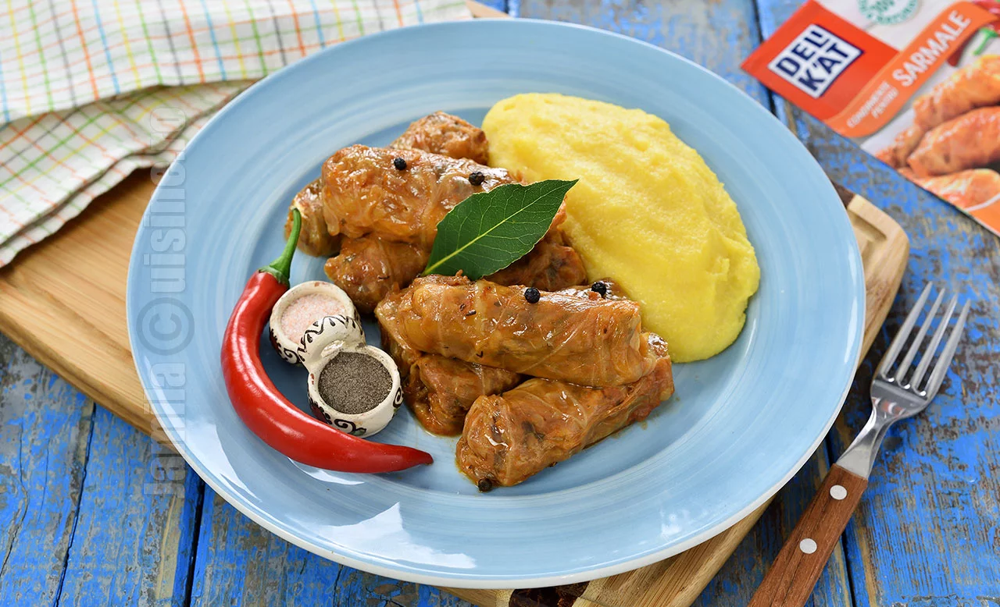

Pavlova cu fructe de padure
13 Oct 2020
DULCIURI
15 Comentarii

Pavlova este mai mult decat un tort, e un desert care pare în întregime alcătuit din spumă, ușor ca pana și întotdeauna asortat cu fructe proaspete. Clasicii acestui desert spun ca un Tort Pavlova are exteriorul din mering crocant si interiorul
de spumă, acoperită cu frișcă”. Prezentarea clasică a unei Pavlova Cake presupune o garnitură de căpșuni, kiwi și passion-fruit, dar sunt acceptate variante cu tot felul de fructe, ba chiar și cu ciocolată.
Reteta video: aici.
Sarmale gustoase de post
25 Ian 2019
MANCARURI
40 Comentarii

Reteta de sarmale gustoase de post este ideala pentru perioadele posturilor de peste an sau pur si simplu pentru cei care au renuntat la carne. Cu totii am mancat cel putin o data in viata. Mie una imi plac foarte mult, mai ales ca mama le
prepara destul de des in copilaria mea. Cel mai mult imi plac sarmalele in frunze de vita, insa nu le refuz nici pe cele din varza.
Mirosul sarmalelor care fierb imi aduce aminte de sarbatori, de zapada si de iarna. Cele de post sunt minunate in orice perioada a anului, sunt usoare si nu in ultimul rand, gustoase. Am urmat reteta mamei mele de sarmale de post cu ciuperci.
Imi plac ciupercile in aceasta reteta pentru ca sunt carnoase, au un gust foarte bun si sunt satioase.
Reteta video: aici.